The story of information technology — and how it changed us.
النهارده هناخد رحلة من أول كمبيوتر في الأربعينيات لحد الحوسبة السحابية، ونشوف كل مرحلة غيّرت حياتنا إزاي.
Before we start
Last time, in three lines
A computer is dumb
Input → processing → output. Nothing more.
Programming vs. AI
You write the rule, or the computer works it out from examples.
The tools
Editor writes, compiler translates, IDE does both and finds mistakes.
That dumb machine took eighty years to get small enough for your pocket. Today: how.
مراجعة سريعة لمحاضرة 1. والنهارده هنشوف الجهاز ده أخد تمانين سنة عشان يصغّر لدرجة إنه يبقى في جيبك.
Part A · Foundation
First, what is actually inside the box?
Before we look at how computers changed the world, let's open one up.
قبل ما نتكلم عن إزاي الكمبيوتر غيّر العالم، تعالوا نفتحه ونشوف جواه إيه.
Part A · Inside the box
Four parts, and that is it
Every computer you have ever touched has these same four kinds of part.
أي كمبيوتر لمسته في حياتك فيه نفس الأربع أنواع دي — موبايل، لابتوب، أو سيرفر.
الأربع أجزاء دي: المعالج بيفكر، الرام بتشيل اللي بتشتغل عليه دلوقتي، وحدة التخزين بتحفظ للأبد، والإدخال والإخراج هما طريقتك تتكلم مع الجهاز.
Part A · The thinker
The CPU
The Central Processing Unit is where the processing stage from Lecture 1 actually happens.
What it does
Follows your instructions, one after another, extremely fast
Where it sits
Between input and output — it is the middle stage
Why speed matters
More transistors inside it means more work per second (remember this — it comes back later today)
المعالج هو مكان مرحلة "المعالجة" اللي أخدناها المرة اللي فاتت. بينفذ التعليمات واحدة ورا التانية بسرعة رهيبة. وخلي بالك من نقطة الترانزستورات — هترجعلنا تاني النهارده.
Part A · The one everyone confuses
RAM is not storage
This is the one students mix up most. If you never saved it, it was only ever in RAM.
دي أكتر حاجة الطلبة بيلخبطوا فيها. لو محفظتش الملف، يبقى كان في الرام بس — وضاع.
الرام مؤقتة وسريعة وبتتمسح لما الجهاز يتقفل. وحدة التخزين أبطأ بس بتحتفظ بكل حاجة. عشان كده لما الكهرباء تقطع وانت مش حافظ، الشغل بيضيع.
Part A · Talking to the machine
Input and output devices
Input — you → machine
Output — machine → you
Keyboard, mouse, touchscreen
Screen, speakers
Microphone, camera
Headphones, printer
Fingerprint sensor
Vibration
A touchscreen is both — it takes your finger in and shows the picture out. Very common exam question.
الشاشة اللي بتلمس هي إدخال وإخراج في نفس الوقت — بتاخد لمستك وبتوريك الصورة. ودي بتيجي في الامتحان كتير.
Part A · Your turn · 5 minutes
Find these parts in your own phone
1
Open Settings → About phone on your device.
2
Write down your RAM and your storage numbers. Which one is bigger?
3
Explain to your partner why that one is bigger.
Storage is always much bigger. You keep thousands of photos, but you only use a few apps at once.
وحدة التخزين دايمًا أكبر بكتير من الرام. عندك آلاف الصور محفوظة، بس بتستخدم شوية تطبيقات في نفس الوقت.
Part A · Examples
The same parts, photographed
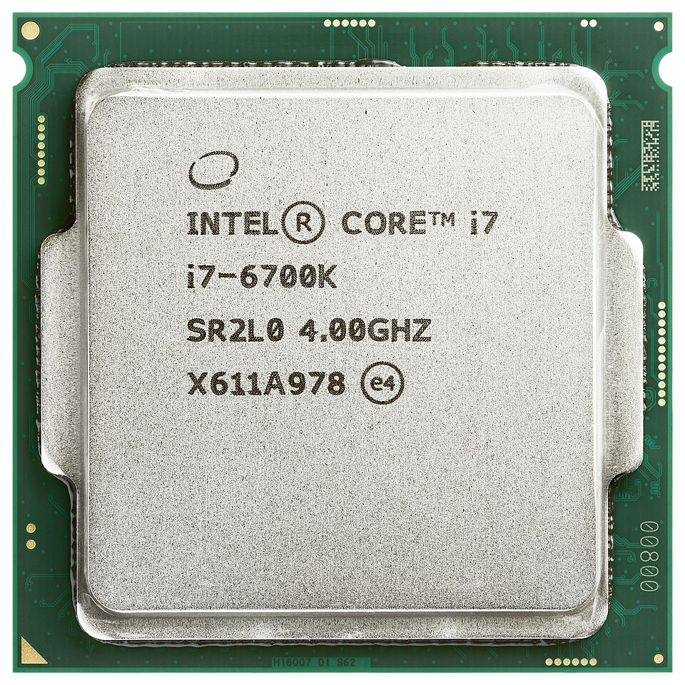
A CPU todayThe whole brain of the machine is this one small square.ده المعالج على الحقيقة — مربع صغير قد كده بس، وبيقعد تحت المروحة جوه اللابتوب.
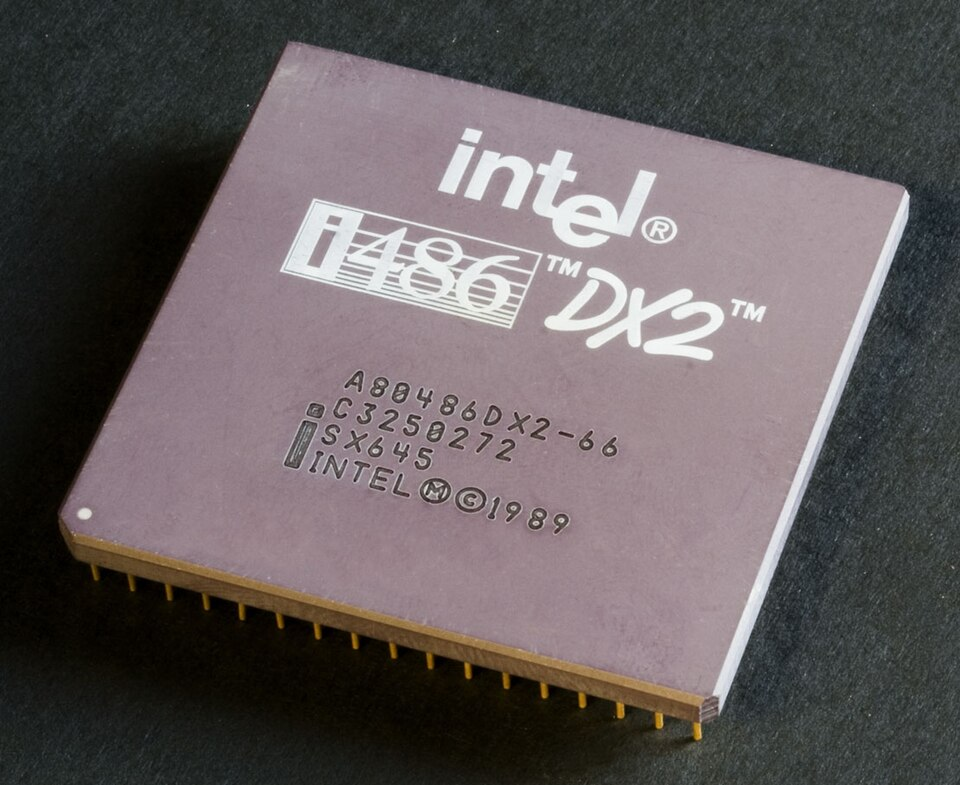
A CPU from 1992Same job, older chip. Fewer transistors inside.نفس الوظيفة، بس شريحة من سنة 1992 وفيها ترانزستورات أقل بكتير.
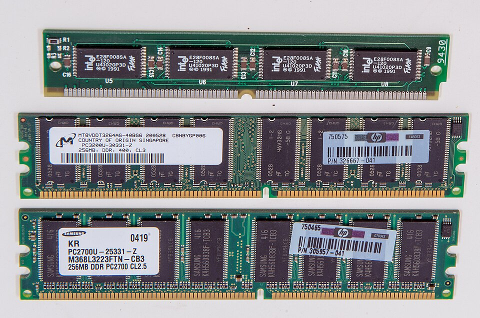
RAM sticksThey clip into the board. Cut the power and everything on them is gone.دي الرام. بتتركّب في اللوحة، وأول ما الكهربا تفصل اللي عليها يضيع.
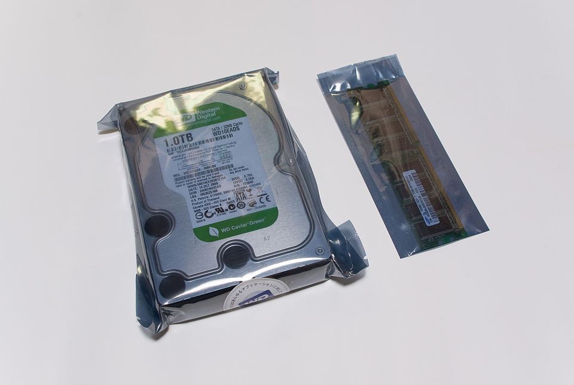
Storage next to memoryThe big metal box keeps your files. The small stick only holds what you are using now.الصندوق الكبير تخزين وبيحتفظ بالملفات، والقطعة الصغيرة رام وبتشيل اللي شغّال دلوقتي بس.
Photos: Wikimedia Commons · public domain or Creative Commons (CC BY / CC BY-SA). Used for teaching.
دي نفس الأجزاء اللي رسمناها قبل كده، بس مصوّرة على الحقيقة. سيب الطلبة يبصوا للأحجام الأول، وبعدين اسألهم مين فيهم فتح جهاز وشاف القطع دي بعينه.
Part B · Textbook Lesson 1-1
Now — those same four parts, eighty years ago, filled a whole room.
How did we get from there to a phone in your pocket?
نفس الأربع أجزاء دي، من تمانين سنة، كانت بتملأ أوضة كاملة. إزاي وصلنا من هناك لموبايل في جيبك؟ ده موضوع الجزء التاني.
Today's question
How has information technology developed through its major stages, and how has each stage changed society?
إزاي تطورت تكنولوجيا المعلومات عبر مراحلها الرئيسية، وإزاي كل مرحلة غيّرت المجتمع؟
By the end of today
You will be able to
1
Explain the major stages in the development of information technology and their impact on society.
2
Give examples of social changes and emerging technologies brought about by information technology, and explain their characteristics.
3
Analyse the effect of one information technology on different groups in society, and justify a decision based on evidence.
أهداف الدرس زي ما هي في الكتاب: تشرح المراحل، تدي أمثلة على التغيرات والتقنيات الناشئة، وتحلل أثر تقنية على فئات مختلفة من المجتمع.
The one idea
At each stage, information technology introduced a new technology or service — and also changed how society communicates, works, and does business.
في كل مرحلة، تكنولوجيا المعلومات ضافت تقنية أو خدمة جديدة، وغيّرت معاها طريقة تواصل المجتمع وشغله وتجارته.
Explore · in pairs · 5 minutes
Before you read on
1
Look at the five time periods on the next slide.
2
For each period, name one device or service from that era that you still use or hear about today.
3
Predict which stage changed daily life the most, and give one reason.
مع زميلك: بصوا على الخمس فترات، ولكل فترة اذكروا جهاز أو خدمة لسه بتستخدموها. بعدين اتوقعوا أي مرحلة غيّرت الحياة اليومية أكتر، واذكروا سبب.
1 · The history of IT
Five stages, eighty years
Time period
Major technologies and events
Impact on society
1940s–60s
Birth of the computer (ENIAC, vacuum tubes)
Mainly military and scientific computation
1970s–80s
Spread of personal computers (PCs)
Beginning of personal computer use
1990s
Commercialization of the Internet; the Web
Globalization of information; spread of email
2000s
Rise of smartphones (iPhone, etc.)
Explosive spread of mobile Internet
2010s onward
Spread of cloud computing
Large-scale data analysis and AI; "IT as a service"
Same job, smaller machine, every single stage.
نفس الوظيفة، بس الجهاز بيصغر في كل مرحلة.
الجدول ده حرفيًا من الكتاب. خلي بالك من الترتيب — بييجي في الامتحان كسؤال ترتيب زمني.
1 · See it for yourself
What they actually looked like
The grey figure is a person, drawn the same size in all four. That is the whole story of this lesson.
الشكل الرمادي ده شخص، مرسوم بنفس الحجم في الأربع صور. ده كل قصة الدرس في صورة واحدة.
بصّوا على الشخص الرمادي — هو نفس الحجم في الأربع صور. الجهاز هو اللي بيصغر، مش الشخص. ENIAC كان وزنه 27 طن وكنت بتمشي جواه، والموبايل اللي في إيدك دلوقتي أقوى منه بكتير.
Part B · Examples
The real machines
ENIAC · 1946It filled a room and weighed 27 tonnes.كان بيملا أوضة كاملة ووزنه 27 طن.
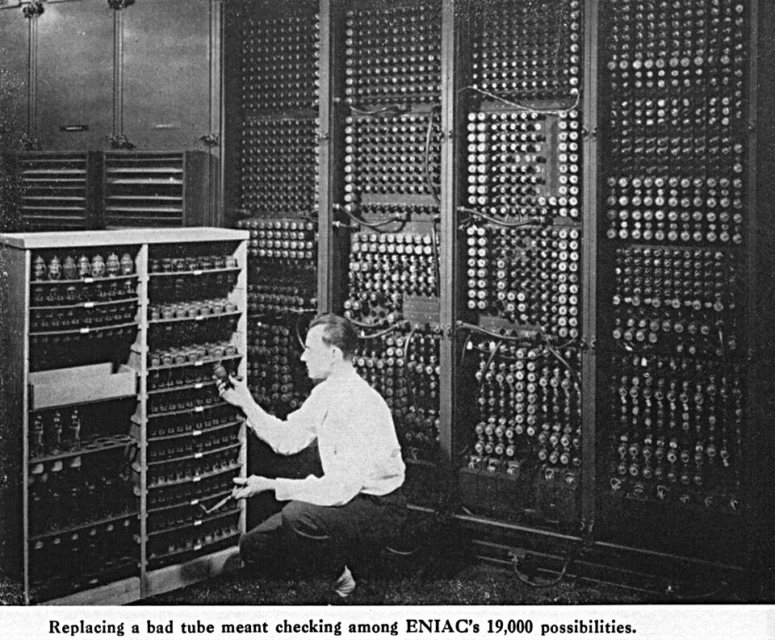
Changing one tubeIt had thousands of glass tubes. When one died, a person walked in and swapped it by hand.كان فيه آلاف لمبات زجاج، ولما واحدة تبوظ حد كان بيدخل يغيرها بإيده.
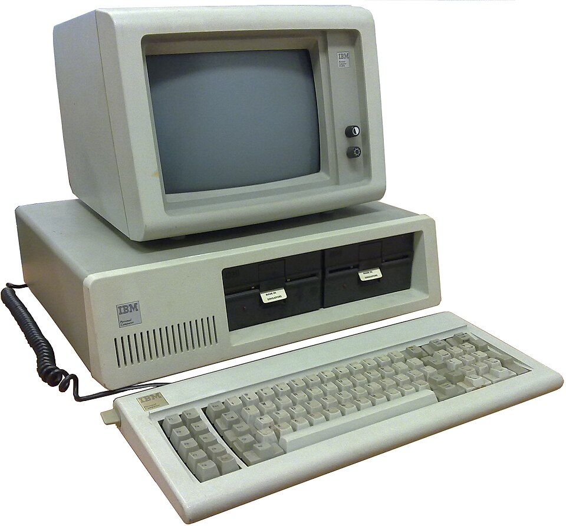
IBM PC · 1981The first computer meant for one ordinary desk.أول كمبيوتر اتعمل عشان يقعد على مكتب عادي.The first web server · 1991One machine at CERN. The note on it says: do not switch this off.جهاز واحد في سيرن، وعليه ورقة مكتوب فيها "متطفيهوش". الويب كله بدأ منه.
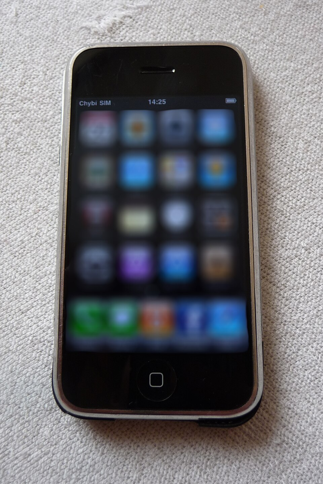
The first iPhone · 2007The internet stopped being a place you go to, and became something you carry.من هنا الإنترنت بقى حاجة شايلها معاك، مش مكان بتروحله.
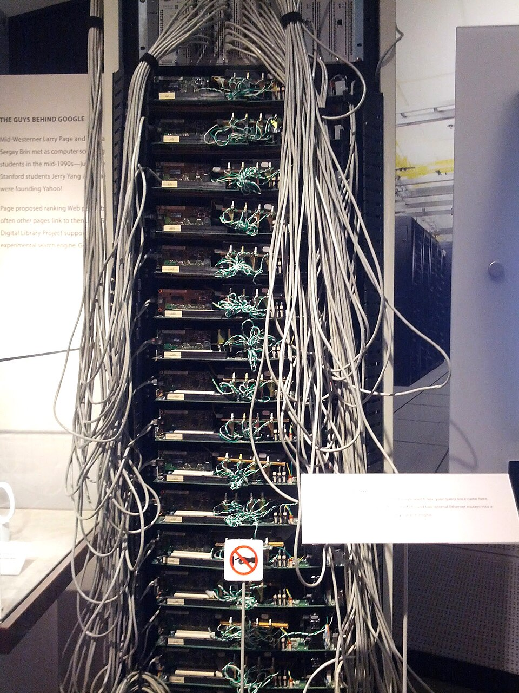
An early server rackCloud computing is really this: someone else’s computers, rented by the hour.الحوسبة السحابية في الآخر هي كده: أجهزة ناس تانية بتأجّرها بالساعة.
Photos: Wikimedia Commons · public domain or Creative Commons (CC BY / CC BY-SA). Used for teaching.
الرسومات اللي فاتت ورّتهم الحجم، والصور دي بتوريهم إن ده حصل فعلًا. قف عند صورة تغيير اللمبة واسأل: تتخيلوا تصلحوا موبايلكم كده؟
1 · Why it matters to you
An ordinary day for a student in Egypt
Checks messages on an SNS app
Pays for breakfast — cashless
Joins a lesson — online learning
Orders a book — e-commerce
Twenty years ago, most of this was not possible.
طالب في مصر النهارده بيعمل الأربع حاجات دول قبل الضهر. من عشرين سنة، معظمهم مكانش ممكن أصلاً.
1 · The engine behind it
Moore's Law
A transistor is a tiny switch inside a chip — more switches, more
computing power. Moore noticed the number doubles about every two years.
Start with 1 transistor. Every 2 years, the number doubles.
Doubling looks small at first, then gets enormous — that is how a phone
caught up with machines that filled a room. And Moore never said it
must happen; he only noticed that it kept happening.
الترانزستور مفتاح صغير جوه الشريحة — مفاتيح أكتر معناها قدرة أكبر. وقانون مور ملاحظة إن عددهم بيتضاعف كل سنتين تقريبًا. خلي بالك: دي ملاحظة مش قانون فيزيائي، وده اللي بيتسأل عليه في الامتحان.
1 · But not forever
Why shrinking is getting hard
Make a transistor small enough and physics starts working against you.
Problem 1 · Quantum tunneling
The barrier gets so thin that electrons slip straight through it
A switch that cannot stay off is not a switch
Problem 2 · Leakage current
Current leaks out on its own, even when nothing is switching
So you cannot have more speed and less power at the same time
That is the quantum tunneling effect, and it is why chips cannot
simply keep getting smaller for ever. So what do we do instead? Next slide.
لما الترانزستورات تصغر أوي بتحصل مشكلتين: النفق الكمومي (الإلكترونات بتتسرب من الحواجز) وتسرب التيار. والحل مش إننا نكمّل تصغير — الحل في السلايد الجاية.
1 · The answer · also one of the emerging technologies
So what do we do instead?
If we cannot keep shrinking, there are two answers.
1 · Parallel processing
Put several processor cores in one chip and share the work
Same size transistors, just more of them working at once
2 · Quantum computers
Stop shrinking the same machine — build a different kind
Built on the principles of quantum mechanics
الحل الأول: نحط أنوية أكتر في الشريحة وتتقاسم الشغل. الحل التاني: نبني نوع مختلف خالص من الكمبيوتر — وده اللي جاي.
1 · The second answer · also one of the emerging technologies
Quantum computing
Expected to dramatically speed up computations that are difficult or impossible for traditional computers, by using the principles of quantum mechanics.
A classical bit holds one state. A qubit uses superposition.
Because a qubit can hold both at once, a quantum computer can work through many possibilities together.
بما إن الكيوبِت بيحمل الاتنين في نفس الوقت، الكمبيوتر الكمومي يقدر يجرب احتمالات كتير مع بعض.
الحوسبة الكمومية متوقع إنها تسرّع بشكل كبير الحسابات الصعبة أو المستحيلة على الكمبيوتر التقليدي، باستخدام مبادئ ميكانيكا الكم.
2 · Social changes
Five things IT changed about daily life
Change
What it means
SNS Social Networking Service
Services that let users connect and post and share information. Highly effective at spreading information rapidly.
E-commerce EC
Buying and selling goods and services through the Internet. For example Amazon, eBay.
Remote work
Work performed from home or other remote locations using the Internet.
Online learning
Classes and study materials delivered using the Internet.
Cashless payment
Payment using electronic money, QR codes and similar, without cash. Cards, mobile payment apps.
الخمس تغييرات بتعريفاتها من الكتاب. أشهر غلطة: إن التجارة الإلكترونية تتعرّف على إنها شراء من محل بالكاش — ده عكس التعريف بالظبط.
Pause & think
Of these five changes, which would be hardest to give up — and why?
من الخمس تغييرات دي، أنهي واحد هيبقى أصعب حاجة تستغنى عنها؟ وليه؟
3 · Emerging technologies
Autonomous driving
Uses AI to drive a vehicle without human operation. Cameras and sensors recognise the surroundings, it makes driving decisions, and it controls the vehicle.
A delay of even 0.1 seconds can lead to an accident. So it uses edge computing — the decision is made instantly on the vehicle itself, not sent to the cloud for judgment.
0.1 seconds is enough to cause a crash — so the car decides for itself instead of waiting for an answer.
بما إن تأخير عُشر ثانية ممكن يسبب حادثة، القيادة الذاتية بتعتمد على الحوسبة الطرفية — القرار بياخده على العربية نفسها مش في السحابة.
3 · Emerging technologies
AR and VR are not the same thing
AR — Augmented Reality
Overlays digital information on real-world images
The real world is still there — you add to it
VR — Virtual Reality
Lets users immerse themselves in a virtual space generated by a computer
The real world is replaced
AR puts something digital into the room you are in. VR takes you somewhere else entirely.
الواقع المعزز بيحط حاجة رقمية في أوضتك. الواقع الافتراضي بيوديك مكان تاني خالص.
الواقع المعزز بيضيف معلومات رقمية فوق صور العالم الحقيقي. الواقع الافتراضي بيحط المستخدم جوه فضاء افتراضي الكمبيوتر عامله. الفرق ده بييجي كسؤال مطابقة.
Emerging tech · Examples
What they look like now
A self-driving carThe dome on the roof is the sensor. The chip that decides sits inside the car.القبة اللي فوق دي الحساسات، والشريحة اللي بتاخد القرار جوّا العربية نفسها.
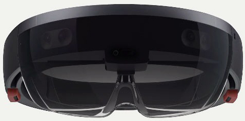
AR headsetThe glass is see-through. You still see the room, with something added on top.الزجاج شفاف — لسّه شايف الأوضة، بس مضاف عليها حاجة.
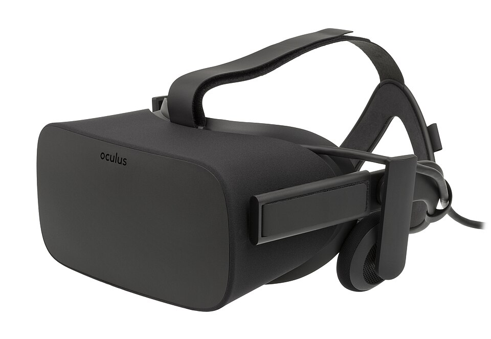
VR headsetClosed at the front. You see nothing of the real room.مقفول من قدّام — مش شايف حاجة من الأوضة الحقيقية خالص.
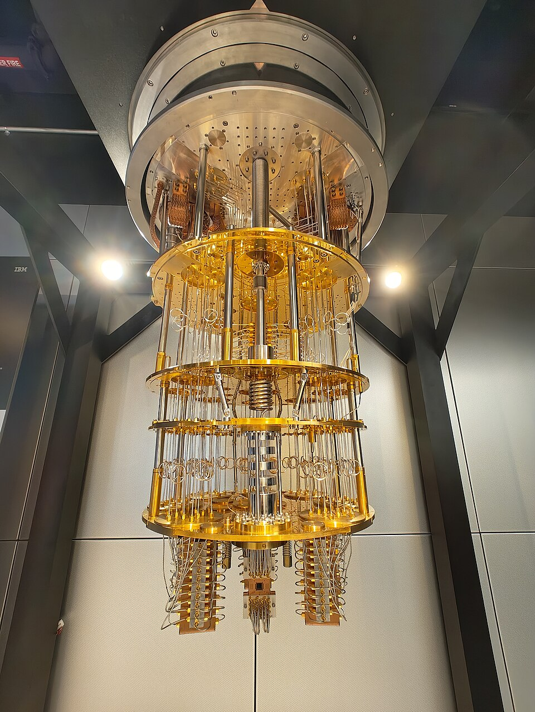
A quantum computerAlmost all of it is cooling. The chip itself is tiny and hangs at the bottom.معظم اللي بتشوفه ده تبريد. الشريحة نفسها صغيرة أوي ومعلّقة تحت.
Photos: Wikimedia Commons · public domain or Creative Commons (CC BY / CC BY-SA). Used for teaching.
الفرق بين AR و VR بيبان من الصورتين على طول: واحد زجاجه شفاف، والتاني مقفول. خليهم يقولوا همّه مين فيهم AR قبل ما تقول.
Exam warning
Two sentences that look right but are wrong
Both of these appear in the textbook exercises. Students pick them every year. Here is why they are wrong.
✗ "VR speeds up a computer"
Why it is wrong: VR has nothing to do with speed.
What VR really does: puts you inside a space the computer generates.
What actually speeds things up: quantum computing.
✗ "E-commerce is paying cash in a shop"
Why it is wrong: that is just ordinary shopping.
What e-commerce really is: buying and selling over the Internet.
Remember: no Internet, no e-commerce.
الجملتين دول موجودين في تمارين الكتاب والطلبة بيختاروهم غلط كل سنة. الأولى: VR ملهاش علاقة بالسرعة خالص — اللي بيسرّع هو الحوسبة الكمومية. الثانية: التجارة الإلكترونية لازم تكون عبر الإنترنت — لو مفيش إنترنت، مفيش تجارة إلكترونية.
Think as an engineer
Should your community move toward cashless payment?
1
Collect data
Survey ten classmates: cash or cashless? Record the results and find the most common answer.
2
Analyse stakeholders
One benefit and one drawback each for: a customer paying, a small shop owner, a person with no bank card or smartphone.
3
Decide
Recommend one step and give two reasons.
لو اتلخبطت، ابدأ بالعميل: ميزة إن الدفع أسرع، وعيب إنه محتاج كارت أو موبايل.
In a new context
A village that has never had Internet gets high-speed Internet and cashless payment for the first time.
Predict two ways daily life will change. Then identify one new problem the village may face.
توقّع طريقتين هتتغير بيهم الحياة في القرية، وحدد مشكلة جديدة ممكن تواجهها.
Key takeaway
IT developed in stages — computers, the Internet, smartphones, cloud computing.
At each stage it introduced a new technology or service and changed how society communicates, works, learns, and pays.
الخلاصة: تكنولوجيا المعلومات اتطورت على مراحل — كمبيوتر، إنترنت، موبايل، سحابة. وكل مرحلة ضافت تقنية جديدة وغيّرت طريقة تواصل المجتمع وشغله وتعلّمه ودفعه.
Before you go
Exam — Lecture 1 and Lecture 2
20 questions — 9 from the first session, 11 from today. At the end it shows you which section you are weakest in.
امتحان شامل على المحاضرتين. في الآخر هيوضحلك انت ضعيف في أنهي جزء بالظبط.